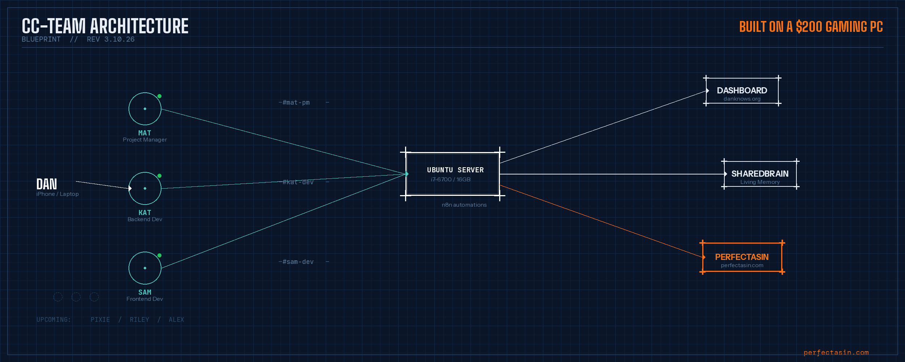

I'm 55 years old. I've been in e-commerce and digital marketing for 27 years. I've scaled Amazon businesses to $72 million annually. I've built three brands to the #1 position in their categories. I've been a CMO, a CGO, a CEO.
And for the last nine months, I couldn't get hired.
Not because I wasn't qualified. Because I was too qualified.
The Rejection Machine
I submitted somewhere around 1,600 applications — and I did it the old-fashioned way. Manually. No AI auto-submit tools flooding inboxes on my behalf. I customized cover letters. I researched companies. I followed up like the professionals I'd been managing for two decades.
I made it to the final round seven times. Seven. Let that sink in. Seven different companies, seven grueling interview processes, seven times I was good enough to be in the last handful of candidates — and seven times, they picked someone else.
Here's what nobody talks about in this economy: the job market isn't just competitive — it's broken. AI-generated resumes are flooding every opening. Bots are auto-submitting hundreds of applications from people who never read the job description. Hiring managers are drowning in noise, and when they see a resume that says "CMO" and "$72M in revenue" — they don't think "perfect fit." They think, "Why does this guy even want this job?"
Meanwhile, I'm sitting in my car in a parking lot in Arizona between shipping Zenergy Gems orders, staring at another rejection email on my iPhone, wondering if the career I spent 27 years building has become a liability.
That was my low point. And it was also my turning point.
The Spark
In January 2026, I saw a LinkedIn post that stopped me mid-scroll.
Dave Clark — the former CEO of Amazon's Worldwide Consumer division, a guy who spent 23 years at the company that invented modern e-commerce — had just vibe-coded a custom CRM for his new startup. Over a weekend. No development team. Just AI tools and domain expertise.
His post said it plainly: three things that used to take months happened in 72 hours.
And something clicked.
If Dave Clark — the man who ran consumer operations for all of Amazon — could sit down with AI and build production software in a weekend, then what exactly was stopping me?
I can't code. Let me say that clearly. I don't know Python. I don't know JavaScript. I have zero formal training in any of this.
But I know Amazon inside and out. I know conversion rate optimization. I know buyer psychology. I know product-market fit. I know what makes a listing convert and what makes it die on page three. I've been studying this stuff since before Rufus, before A9 was even called A9.
What I also know how to do is copy and paste. And take screenshots.
I'm not joking. That is literally my technical toolkit. Copy, paste, and screenshot my way through problems. Ask AI to explain things. Screenshot the error. Paste it back. Ask again. Keep going.
If that sounds too simple to work, keep reading.
If You Can't Beat 'Em, Join 'Em
The very thing making it harder for me to get hired — AI — was also the thing making it possible for one person to do what used to take a whole team.
So I asked myself a question: What if I stopped trying to get hired and started building?
Not with venture capital. Not with a co-founder. Not with any coding ability whatsoever.
With copy-paste proficiency, screenshot software, and 27 years of hard-won knowledge.
That's it. That was my tech stack.
And I want to be crystal clear about this, because it's the most important thing I'll say in this entire article: if you're not lazy, if you believe you can figure it out, and if you're curious and persistent enough to keep going when you get stuck — you can do this too.
I had no training in Linux. No training in server administration. No training in CLI commands, bash scripting, or terminal multiplexing. I learned every single one of those things by doing them — by asking AI to explain, by copying the commands it gave me, by screenshotting the errors when things broke, and by pasting those screenshots back and saying, "What went wrong?"
That loop — ask, copy, paste, screenshot, repeat — is the entire methodology.
Building the Team I Couldn't Afford to Hire

The first thing I needed was a development team. The kind of team that would cost $30,000 to $50,000 a month in Silicon Valley salaries.
Instead, I built one out of AI.
I had my son's old gaming PC sitting in the corner — an Intel i7-6700 with 16 gigs of RAM. The kind of machine most people would sell on Facebook Marketplace for $200. I wiped it, taught myself how to install Ubuntu Linux (by asking AI, step by step, copy-pasting every command), set up remote access through Tailscale, and turned it into a dedicated AI agent server.
Then I created three Claude Code agents:
Matthew (Mat) — The Project Manager. Mat takes my vision and breaks it down into actionable tasks. He creates GitHub issues, assigns work, tracks progress, and keeps the developers unblocked. I gave him a direct, organized personality — the PM I always wanted to hire but could never afford.
Katherine (Kat) — The Backend Development Wizard. Kat handles everything under the hood. APIs, databases, authentication, server infrastructure. She's meticulous and security-conscious.
Samantha (Sam) — The Frontend Developer. Sam builds everything you see and touch. The UI, the user experience, the polish that makes a product feel professional instead of janky.
But here's the part that takes this from experiment to something more: I didn't just give them names. I gave them souls.
Each agent has their own persona file that defines how they think, their strengths, their communication style. They have their own memory systems. Their own skills profiles. I even chose their faces and did photoshoots — because when you're working with a team 14 hours a day, even a virtual one, you need to put a face to a name.
You can see all of them at RavingFans.ai.
And they're just the beginning. I've got three more agents spec'd out and ready to join the team: Pixie (Creative Director), Riley (Data Analyst), and Alex (Content Strategist). They're designed. They have faces, personas, and skills mapped out. They just haven't been "hired" yet.
I dispatch work to my current team from my laptop — or from my phone while sitting in the car. They show up on a 55-inch monitor in my office, three terminal panes running simultaneously. I can watch them code in real-time.
The day I saw all three panes working at the same time — Mat coordinating, Kat building the backend, Sam polishing the frontend — sitting on that old gaming PC running Linux, a system I built from scratch with no training — that's when I knew this wasn't a gimmick. This was real. And if I can do it, anybody can.
The Infrastructure Nobody Tells You About
Here's what the vibe coding influencers won't tell you: building a product is the easy part. Building the system that lets you keep building — that's where it gets real.
AI agents have a fundamental problem: they forget everything between sessions. Every time an agent starts a new task, it's like they've never met you. All the context, all the decisions, all the institutional knowledge — gone.
So I built the infrastructure to solve that. Again — no training. Just curiosity, persistence, and a lot of copy-pasting.
The Agent Dashboard — A web-based command center at dashboard.danknows.org where I can see what every agent is doing, what tasks are queued, what's blocked, and what's shipped. Think of it as mission control for AI workers.
The SharedBrain — A living document that serves as institutional memory for the entire team. When we make a decision in one conversation, it gets logged to a Slack channel called #brain-log, which triggers an automation that writes it to the SharedBrain. When a new conversation starts, the SharedBrain gets read first. Context survives across sessions. The team learns and grows together.
The Slack Bridge — Each agent has their own channel plus a leadership channel and a review channel. I communicate with the team the same way you'd communicate with human developers — through Slack messages, code reviews, and standup summaries.
Self-Hosted Automations — Workflow automation replacing every paid tool I used to need. No expensive subscriptions. No vendor lock-in. Everything runs on that same repurposed gaming PC in my office.
I taught myself every single piece of this by asking AI how to do it, copy-pasting the instructions, and troubleshooting when things broke. Which was often. There were nights where I was up past midnight debugging terminal sessions because I didn't know you had to press Ctrl+B then release before pressing D to detach. That kind of thing.
But I kept going. Because the alternative was sending application number 1,601.
PerfectASIN gives you consultant-grade listing intelligence — title, bullets, images, price — in one click.
Try PerfectASIN →The Product: PerfectASIN
With the team and infrastructure in place, it was time to build the product that all of this was for.
PerfectASIN is a Chrome extension that gives Amazon sellers consultant-grade, ASIN-specific intelligence on their listings.
This is not a toy. This is not overwhelming data-scraping like the other guys. This is the opposite of that.
You land on an Amazon product page. You click the extension. And PerfectASIN analyzes five critical elements of your listing:
- Title — Is it optimized for conversion, Rufus (Amazon's AI shopping assistant), and A9 search? We score it on a weighted scale and generate AI-powered variations with explanations of why each one works.
- Bullets — Are your bullet points selling, or are they just listing features? We analyze persuasion, keyword coverage, and mobile readability.
- Description — Deep analysis of your product description including A+ Content considerations.
- Hero Image — We evaluate your main image against conversion best practices. Mobile optimization, search result impact, and the first 0.3-second value communication.
- Price — Competitive pricing intelligence. Category positioning and psychological pricing analysis.
This is 27-years-experience, consultant-grade, actionable intelligence that will help your ASIN crush every other ASIN in your category. And it's just the first step in building a category-dominating suite of tools.
Every piece of analysis is backed by the same framework I used when I was charging $500 an hour as a consultant. The difference is, now anyone can access it for the price of a SaaS subscription.
I didn't write a single line of the code behind it. My AI team did. I provided the domain expertise, the business logic, the scoring frameworks, and the strategic direction. They built it.
Copy. Paste. Screenshot. Ship.
The Real Point
I want to be direct about something.
I'm not saying AI replaces developers. My agents are incredible — but they need direction. They need someone who understands the problem space deeply enough to know what to build and why. They need domain expertise. They need judgment.
What AI does replace is the gatekeeping.
For 27 years, I had knowledge locked in my head that could only be delivered one-on-one, client by client, hour by hour. Now that knowledge is encoded into a product that can serve thousands of Amazon sellers simultaneously.
I didn't need anyone's permission. I didn't need a venture capitalist to believe in me. I didn't need a hiring manager to pick my resume out of a pile of 500 AI-generated applications.
I needed to stop waiting and start building.
For Everyone Reading This Who Feels Stuck
This story isn't about me. It's about what's possible right now, today, for anyone willing to try.
If you're a displaced executive staring at rejection emails — this is for you.
If you're a subject matter expert who thinks you need to learn to code before you can build something — this is for you.
If you're someone who's been told your experience doesn't translate to the new economy — this is especially for you.
Dave Clark spent 23 years at Amazon and used AI to build a CRM in a weekend. I spent 27 years in e-commerce and used AI to build a product company from a parking lot.
Neither of us had permission. Neither of us waited.
The tools have never been more accessible. The barriers have never been lower. And honestly? The job market has never given you a better reason to bet on yourself.
You don't need a CS degree. You don't need VC funding. You don't need to be technical. You need curiosity, persistence, and domain expertise that AI can amplify.
You need to believe you can figure it out. And then you need to start.
Copy. Paste. Screenshot. Repeat. Ship.
Dan Matejsek is the founder of PerfectASIN and RavingFans.ai. He's spent 27 years in e-commerce, affiliate marketing, and digital growth, including scaling Amazon businesses to $72M annually and building three #1 category brands. He operates a growing AI agent team from his home in Arizona, built on his son's old gaming PC.
Try PerfectASIN → perfectasin.com · Meet the team → ravingfans.ai · Follow → @DanKnows on X